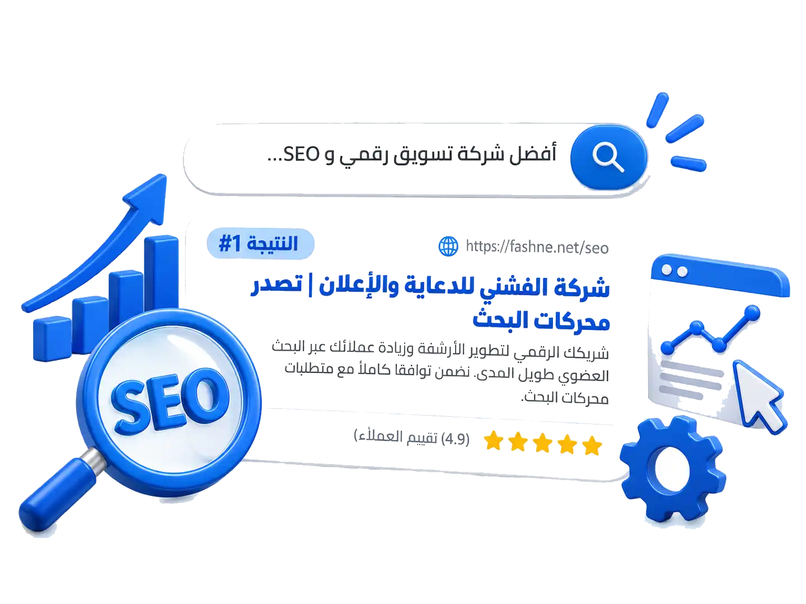

عندما يبحث العميل عنك هل يجدك؟
تحسين
محركات البحث SEO للشركات
وجود موقع إلكتروني لا يعني بالضرورة أن العملاء سيصلون إليه وهنا ياتي دور تحسين محركات البحث SEO
نعمل على تحسين الموقع ومحتواه وبنيته لمساعدته على الظهور بشكل أفضل في نتائج محركات البحث والوصول إلى الأشخاص الذين يبحثون عن الخدمات والمنتجات المرتبطة بنشاطك. كما نربط هذا بـ التسويق الإلكتروني المتكامل و إدارة الصفحات وكتابة المحتوى.

خدمات SEO
نوفر حلولاً شاملة ومتكاملة لتهيئة موقعك بالكامل ليتصدر نتائج البحث. يمكنك الاطلاع على سابقة أعمالنا أو معرفة كيف ندمجها مع خدمات التسويق الإلكتروني لدينا.
دراسة الكلمات المفتاحية
دراسة الكلمات المفتاحية والبحث عن الكلمات والعبارات التي يستخدمها الجمهور عند البحث عن المنتجات والخدمات.
تشخيص الخدمة #01
ال On-Page SEO
تحسين عناصر صفحات الموقع والمحتوى والعناوين والوصف والربط الداخلي وغيرها.
تشخيص الخدمة #02
الTechnical SEO
تحليل الجوانب التقنية التي قد تؤثر على قدرة محركات البحث على الزحف وفهم الموقع.
تشخيص الخدمة #03
تحسين المحتوى
تطوير المحتوى ليكون أكثر فائدة ووضوحًا وارتباطًا بالكلمات المستهدفة.
تشخيص الخدمة #04
تحسين بنية الموقع
تنظيم صفحات الموقع وتصنيفها بطريقة واضحة للمستخدم ومحركات البحث.
تشخيص الخدمة #05
تحسين سرعة الموقع
تحليل العوامل المؤثرة في أداء الموقع والعمل على تحسينها.
تشخيص الخدمة #06
الSEO المحلي
تحسين الظهور في عمليات البحث المحلية بما يتناسب مع طبيعة النشاط وموقعه.
تشخيص الخدمة #07
تحليل المنافسين
دراسة المنافسين في نتائج البحث واكتشاف الفرص المتاحة.
تشخيص الخدمة #08
متابعة الأداء
متابعة تطور الكلمات والزيارات والظهور ومؤشرات الأداء.
تشخيص الخدمة #09
كيف نعمل على SEO
استراتيجية علمية ومدروسة نطبقها بدقة لضمان تحسين ظهور موقعك وأرشفته. يمكنك مراجعة تواصل معنا أو أعمالنا للبدء فوراً.
تحليل الموقع
نبدأ بفحص الموقع وتحديد نقاط القوة والضعف.
دراسة السوق والكلمات
نحدد الكلمات التي تستحق الاستهداف.
وضع استراتيجية SEO
نحدد الأولويات وخطة العمل.
التحسين والتنفيذ
نعمل على الجوانب التقنية والمحتوى والبنية.
المتابعة
نراقب النتائج ونحلل البيانات.
التطوير
نحدث الاستراتيجية وفق النتائج وتغيرات محركات البحث.
تحسين محركات البحث ليس حملة قصيرة المدى بل عملية مستمرة تعتمد على جودة الموقع والمحتوى والمنافسة والسوق وعدد من العوامل الأخرى لذلك نركز على بناء أساس قوي واستراتيجية قابلة للتطوير بدلًا من الاعتماد على حلول مؤقتة
لماذا تختار استراتيجية الفشني المستدامة؟
نضمن توافقاً كاملاً مع متطلبات محركات البحث ونوفر محتوى فريداً وجذاباً عبر باقات إدارة الصفحات وكتابة المحتوى المتوفرة لدينا، بالإضافة إلى تتبع متواصل للحملات بالتعاون مع فريق التسويق الإلكتروني.
خل العملاء يجدونك عندما يبحثون عنك
هدفنا هو زيادة فرص وصول العملاء المناسبين إلى موقعك من خلال البحث العضوي وبناء حضور إلكتروني أقوى على المدى الطويل. نوفر لك هذه النتائج بالترابط مع خدمات إدارة الحملات الإعلانية وخدمة كتابة المحتوى التسويقي.
شركة الفشني للدعاية والإعلان | تصدر محركات البحث
شريكك الرقمي لتطوير الأرشفة وزيادة عملائك عبر البحث العضوي طويل المدى. نضمن توافقاً كاملاً مع متطلبات محركات البحث.